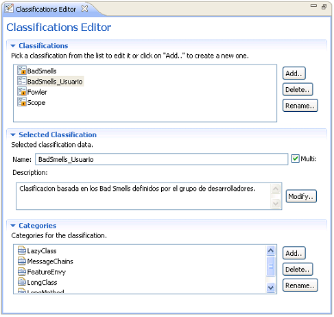

Editor de clasificacionesEditor de clasificaciones
Editor de clasificacionesEditor de clasificaciones
Classifications Editor es un editor de clasificaciones diseñado, además de para poder visualizar las clasificaciones disponibles y la información relativa a las mismas, para permitir crear y modificar clasificaciones propias del usuario, así como definir las categorías que tendrá disponible cada una de ellas. Las clasificaciones permiten categorizar las refactorizaciones y son utilizadas en la vista del catálogo de refactorizaciones.
Al seleccionar una clasificación del plugin (representado con un icono de un candado) no se podrá editar, simplemente se podrán visualizar sus atributos. En el caso de las clasificaciones del usuario se pueden:
El aspecto que presenta el editor de clasificaciones es el siguiente:
